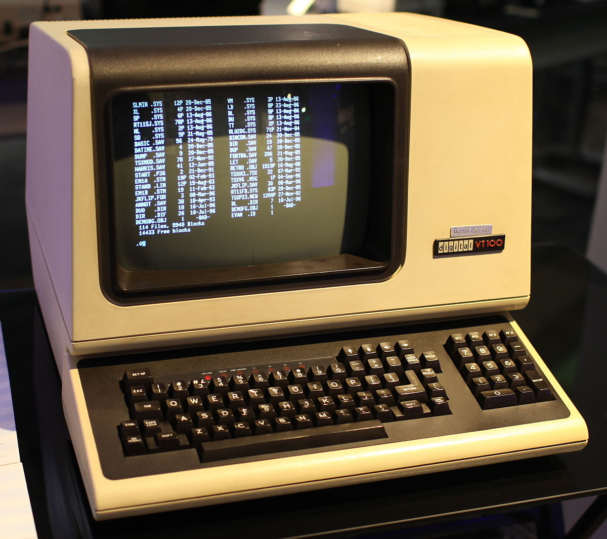

本讲概述
- 关于《计算机系统基础》习题课
- 特别篇：学术诚信
- PA0 选讲
关于《计算机系统基础》习题课
习题课的内容
《计算机系统基础》理论课中遗失的实践细节
- 对你们从 Lab/PA 中生存下来是至关重要的
- 对你们作为 “码农” 的生涯都是至关重要的
- 今天的标题来自 The Missing Semester of Your CS Education
墙裂推荐！！！ - 我们 miss 的比这门课更多
习题课 (和课程网站) 会布置所有作业
- PA (编程大实验)
- Lab (编程小实验)
- Homework (书后习题)
关于传说中地狱难度 PA 的一些真相
它很难，的确很难 ←
- 确切地说，对最好的同学来说依然有一定的挑战性
- 如果你感到异常困难，你更需要的其实是 C/C++ 编程的训练
- (并且我们知道这一点！)
往年一些同学都因为不诚信的举动获得了成绩
- 他们得到了相应的报应 (例如在《操作系统》中惨挂)
- (并且我们知道这一点！)
你总是可以耍一些小聪明，从别人那里得到帮助
- 但越是独立完成，受到的训练就越好
- (并且我们知道这一点！)
老师/助教的使用
联系/求助：使用邮件
- 能使你更好地整理问题。也许在整理的过程中你就发现答案了
Office Hour: 每周四 19:00-21:00 @ 计算机楼 809
- 老师和助教都在
(顺便开组会) - 什么是 Office Hour???
Ask
- 对上课内容没有理解的地方、对课程/学习的疑惑、……
Don't Ask
- 安装 XXX 错了怎么办？Segmentation Fault 了怎么办？
学术诚信 (Academic Integrity)
学生手册：不能抄作业。
- 简单概括：
独立完成
针对作业的独立完成
- 自己完成作业
- 对使用的已有资料作出明确的标示
- ACM Policy on Plagiarism, Misrepresentation, and Falsification
针对代码的独立完成
- 自己完成代码的编写
- 自己完成测试用例
- 仅在允许的范围内使用他人的成果
具体的案例：MIT 6.005 Elements of Software Construction
Individual work
- Problem sets in this class are intended to be primarily individual efforts. You are encouraged to discuss approaches with other students but
your code and your write-up must be your own . - You
may not use materials produced as course work by other students , whether in this term or previous terms, nor may you provide work for other students to use. - It’s good to help other students. But as a general rule, during the time that you are helping another student,
your own solution should not be visible , either to you or to them. Make a habit of closing your laptop while you’re helping.
具体的案例：MIT 6.005 Elements of Software Construction (cont'd)
Using external resources
- It’s fine to use material from external sources like StackOverflow, but only with proper attribution, and only if the assignment allows it. In particular, if the assignment says “implement X,” then you must create your own X, not reuse one from an external source.
- It’s also fine to use any code provided by this semester’s 6.031 staff (in class, readings, or problem sets), without need for attribution. Staff-provided code may not be publicly shared without permission, however, as discussed later in this document.
具体的案例 (1)
- Alyssa and Ben sit next to each other with their laptops while working on a problem set. They talk in general terms about different approaches to doing the problem set. They draw diagrams on the whiteboard. When Alyssa discovers a useful class in the Java library, she mentions it to Ben. When Ben finds a StackOverflow answer that helps, he sends the URL to Alyssa.
OK . - As they type lines of code, they speak the code aloud to the other person, to make sure both people have the right code.
INAPPROPRIATE - In a tricky part of the problem set, Alyssa and Ben look at each other’s screens and compare them so that they can get their code right.
INAPPROPRIATE
具体的案例 (2)
- Jerry already finished the problem set, but his friend Ben is now struggling with a nasty bug. Jerry sits next to Ben, looks at his code, and helps him debug.
OK . - Jerry opens his own laptop, finds his solution to the problem set, and refers to it while he’s helping Ben correct his code.
INAPPROPRIATE .
具体的案例 (3)
- Louis had three problem sets and two quizzes this week, was away from campus for several days for a track meet, and then got sick. Ben feels sorry for Louis and wants to help, so he sits down with Louis and talks with him about how to do the problem set while Louis is working on it. Ben already handed in his own solution, but he doesn’t open his own laptop to look at it while he’s helping Louis.
OK . - Ben opens his laptop and reads his own code while he’s helping Louis.
INAPPROPRIATE . - Ben has by now spent a couple hours with Louis, and Louis still needs help, but Ben really needs to get back to his own work. He puts his code in a Dropbox and shares it with Louis, after Louis promises only to look at it when he really has to.
INAPPROPRIATE .
具体的案例 (4)
- John and Ellen both worked on their problem sets separately. They exchange their test cases with each other to check their work.
INAPPROPRIATE . Test cases are part of the material for the problem set, and part of the learning experience of the course.You are copying if you use somebody else’s test cases, even if temporarily .
具体的案例: PA0
PA0: 安装 Linux 系统，并提交空的文件。允许向互联网/同学求助。
遇到问题 (如安装错误) 找同学询问/解决
- 但你可能就失去了这门课原本的训练
- 尽可能先自己解决
- 帮其他同学解决问题的人
一起还原解决问题的过程
请别人安装好系统，或使用他人的虚拟机镜像
Academic Integrity
感到三观尽毁？
- 原来拿个测试用例也违反 academic integrity？
- 拿个大腿的作业来改改不香吗？我还读懂了呢！
老师压根就没精力管，对他来说吃力不讨好- 有些事情是 “天然”
被禁止 的 - 但我们的教育里缺失了 “这是不对的”
- 有些事情是 “天然”
那些痛苦是对你的训练 (training)
- “看懂” 和 “自己设计测试用例、自己做出来” 天差地别
- PA 难度无形剧增 ←
过去没有 academic integrity 欠的债
- PA 难度无形剧增 ←
- 不要看不起美国人
- (大部分) 学生真的明白并自发地执行这个标准
PA0 选讲：进入 Linux 世界
让时间回到 1980s
就算回到 1980s，该干的事情还得干啊
- 管理文件；编代码；写作业；排版杂志；上网……
例子

- vi a.txt
- ip addr / ping baidu.com
- df -h /
- find . -name "*.cpp"
- fdisk /dev/sdb
- shutdown -h 0
- apt install qemu-system
- pdfjoin a.pdf b.pdf
- iconv -f gbk -t utf-8 file.txt
现在都 2020 年了，还整这些玩意干嘛？
上面这些事情不是点点鼠标就能搞定的吗？
被迫接受
不学你就挂了
主动接受
- 对系统更强的控制力
- 应用程序通常无法满足 power user 的全部需求
- 生产系统编程的事实标准
- Linux, macOS, Windows, ...运维基本都靠命令行工具
- 来自开源社区的一份礼物
- 非常丰富、可定制、看得见源码的软件栈
Linux 命令行概述
第一课
这是啥玩意啊？让我用这个度过余生？
$ ▍
Unix is user friendly. It's just selective about who its friends are.
Read the f**king manual.
Search the f**king web.
为什么大家在一开始都感到困难？
1980s: 以 MHz 为单位的主频；80 x 24 的字符终端
- 无法提供丰富的交互界面
- 但依然要完成各类任务
- 你会如何设计？
不可避免，需要用户查阅
手册 记住一些系统里的约定 (下面是最重要的一些)。
- 目录结构、文件命名规律、访问权限
- 命令执行的约定
- 常用命令行工具
- Shell 编程语言
常用的命令行工具
查看文件
- ls (list), cd (change directory), find, tree, ...
阅读手册
- man (
man man); apropos; info
文本处理
- cat (concatenate), wc (word count), grep (
g/re/p) - tr (translate), cut, awk, sed (stream editor)
命令行工具多到什么程度呢……
- unzip, strip, touch, finger, grep, mount, fsck, more, yes, fsck, fsck, fsck, umount, sleep....
UNIX 哲学
Keep it simple, stupid. (KISS)
everything is a file andpipeline programs to work together
一个命令只做 “一件事”
- 从 stdin 输入 (
printf) - 向 stdout 输出 (
scanf) - 使用参数控制行为 (
int main(int argc, char *argv[]);)
命令的输入和输出都是人类 + 机器均可读的文本
find .wc -l a.txt b.txt
把命令的输入/输出连接起来 (管道) 协作完成任务
find . | grep '\.cpp$' | xargs cat | wc -l
The Shell Scripting Language
祝贺！刚才其实是 Shell 执行了一段 Shell 语言编写的程序。
Shell 是一门基于
a=hello- 赋值 (注意=左右没有空格)$a- 将变量的值 “粘贴”$(cmd)- 将 cmd 运行的 stdout “粘贴”if cmd; then; ... ; fi- 根据 cmd 运行结果执行分支cmd > file- 把 cmd 的 stdout 重定向到filecmd1 | cmd2- 把cmd1的 stdout 作为cmd2的 stdin
有趣的小问题
- 如何用
if比较存储了整数字符串的大小？- (
if 1 > 2会发生什么？)
- (
开始编程吧！
输出当前用户是不是 root
[ $UID -eq 0 ] && echo "is root!"
查看磁盘引导扇区 (Master Boot Record)
cat /dev/sdb | head -c 512 | ndisasm -b 16 -o 0x7c00 -
统计所有 cpp 文件的行数
find . | grep '\.cpp$' | xargs cat | wc -l
统计命令行命令的频率
history | tr -s ' ' | cut -d ' ' -f3 | sort | uniq -c | sort -nr
以上都是命令行里的命令，但同时也是 bash script 的程序
- (这就是程序员的宿命吧)
自动化工具：程序员福利系列
重构福利
- (ex) 对一个目录里的所有
.cpp文件执行同样的vim动作
LaTeX 用户福利
- (pdfcrop) 把 LibreOffice 的演示文稿导出为 PDF，然后将每一页的白边部分裁去，分别命名为
fig-1.pdf,fig-2.pdf, ...
视频制作福利
- (ffmpeg) 为视频添加水印和字幕
自动化工具：程序员福利系列 (cont'd)
# 自动登陆 p.nju.edu.cn 不香吗？
curl -d "username=学号&password=密码" \
http://p.nju.edu.cn/portal_io/login
这有什么用？
- 校园网内某台机器的长久连接 (brasd)
- 作为你的校内代理服务器
- 实现内网穿透……
一个有趣的问题
- 密码是明文，被舍友偷窥了怎么办？？？
- 文件系统有权限管理:
chmod -r- 但是 shell script 必须读权限？
生存指南
拥抱变化
很烦躁：一下就碰壁？
- 胡乱尝试一通？对了就对了，不对就抓瞎？
- 有时候不知道该到底怎么 STFW, RTFM？
静下心来，从头开始
- The Missing Semester of Your CS Education
- RTFM (slides), STFW, RTFSC
- 不要觉得 Makefile、提交脚本都是和你无关的
试图理解一切事情是如何发生的
- 从读得懂开始，逐渐过渡到会写
现代化你的命令行工具

例子：
- tldr (替代 man)
- zsh-z (替代 pushd/popd)
- f**k
- fzf
拥抱开源社区
- 你遇到的 99% 的问题，别人已经遇到过了
- Linux/macOS
/etc/hosts
- Windows
C:\Windows\System32\drivers\etc\hosts
- 增加一行
127.0.0.1 www.baidu.com
总结
本次课程最重要的内容
静下心来，从头开始
- The Missing Semester of Your CS Education
- RTFM (slides), STFW, RTFSC
总结
你不会感到学习这门课很舒适
- 不要用 “我们学得比较理论……” 来骗自己
- 就是他妈不扎实
- Academic integrity 可能让你感到三观尽毁
- 你会理解到南大还不是 “世界一流大学”
但请不要放弃/躺倒
- 你们未来是要承担大事业的